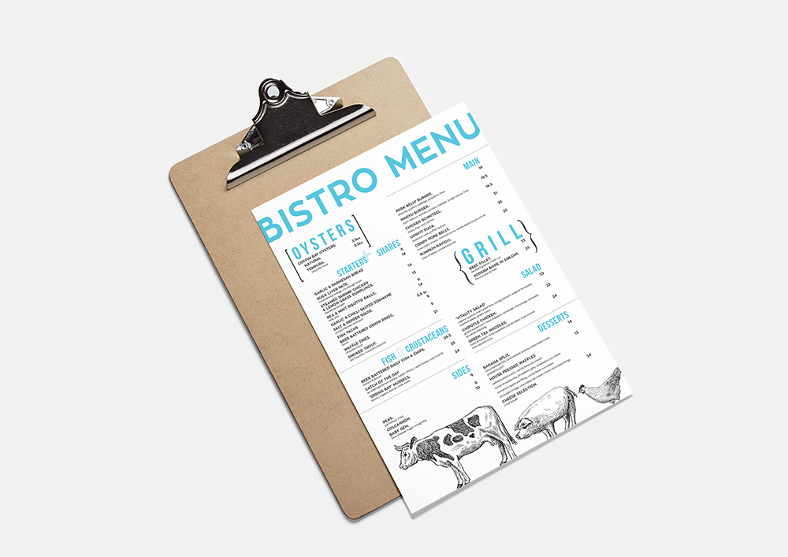
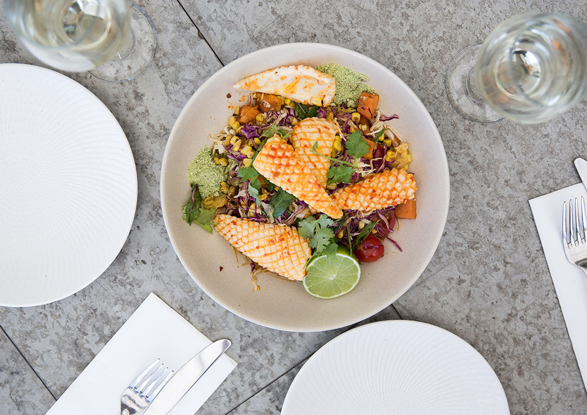
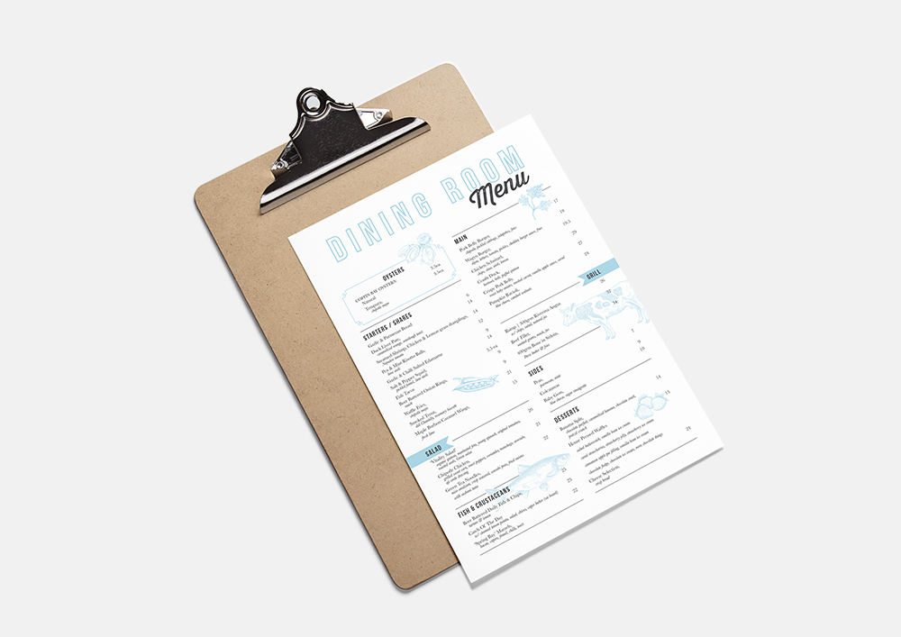
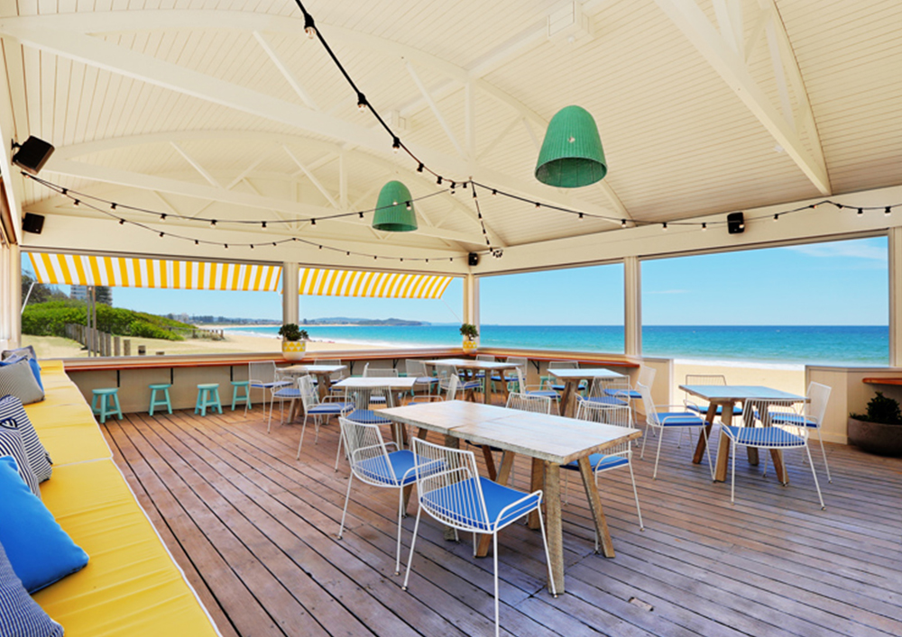
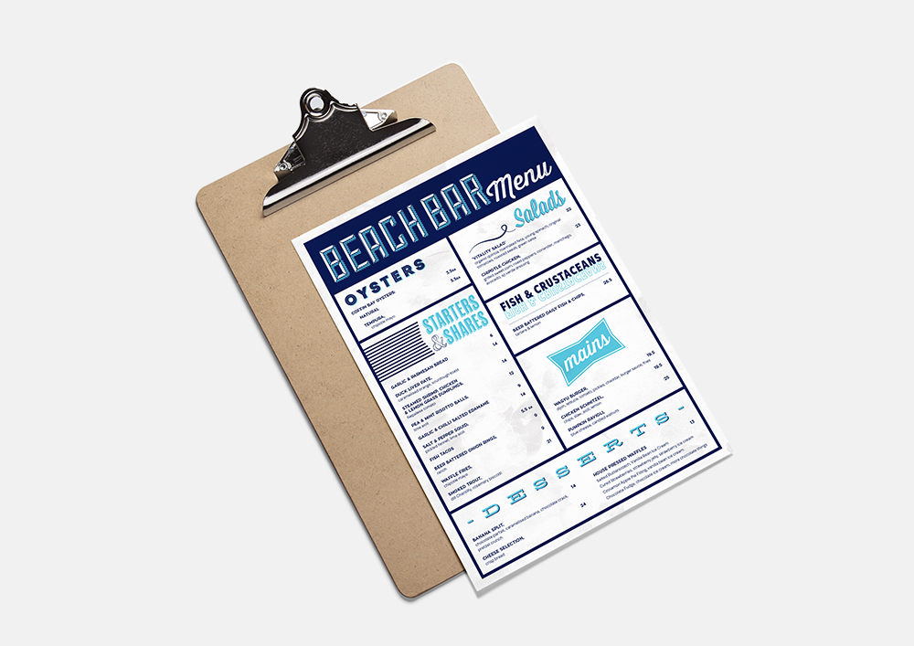

The Collaroy Hotel Menus
The Collaroy Hotel required fresh, new menus to go with the refurbishment of the trendy beach side hotel. Inspired by the relaxed beach vibes, I used simple and clean cut designs, which can be easily updated on wooden clip boards, achieving a 'raw' look. Each section of the hotel has a different purpose, by which the menu's reflect. The Bistro menu has a more masculine dominance hence the big, bold fonts tied with a strong vibrant blue, where the Dining menu needed a elegant quality which can be seen through the subtle, light blues and refined san serif font, whilst the Beach Bar menu has a more quirky and playful tone to it, appealing to the younger demographic that the Beach Bar tends to.




